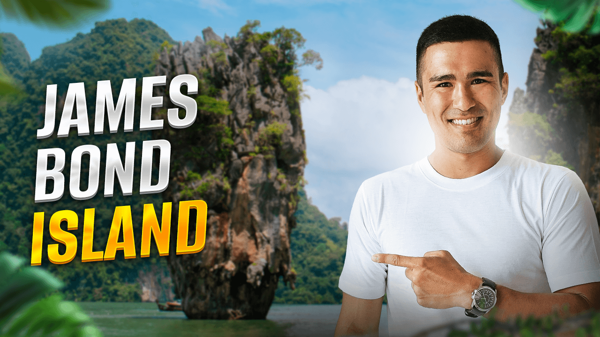
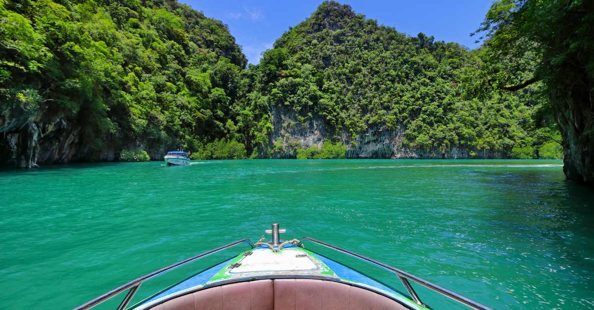
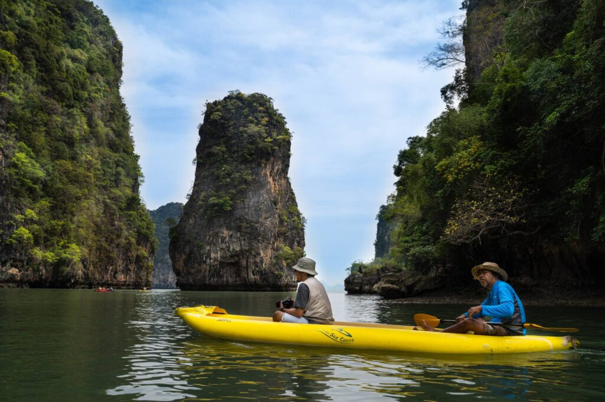
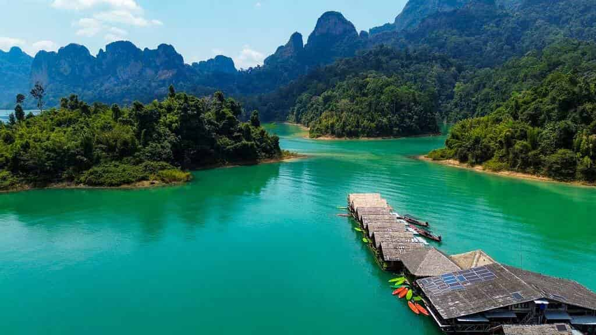
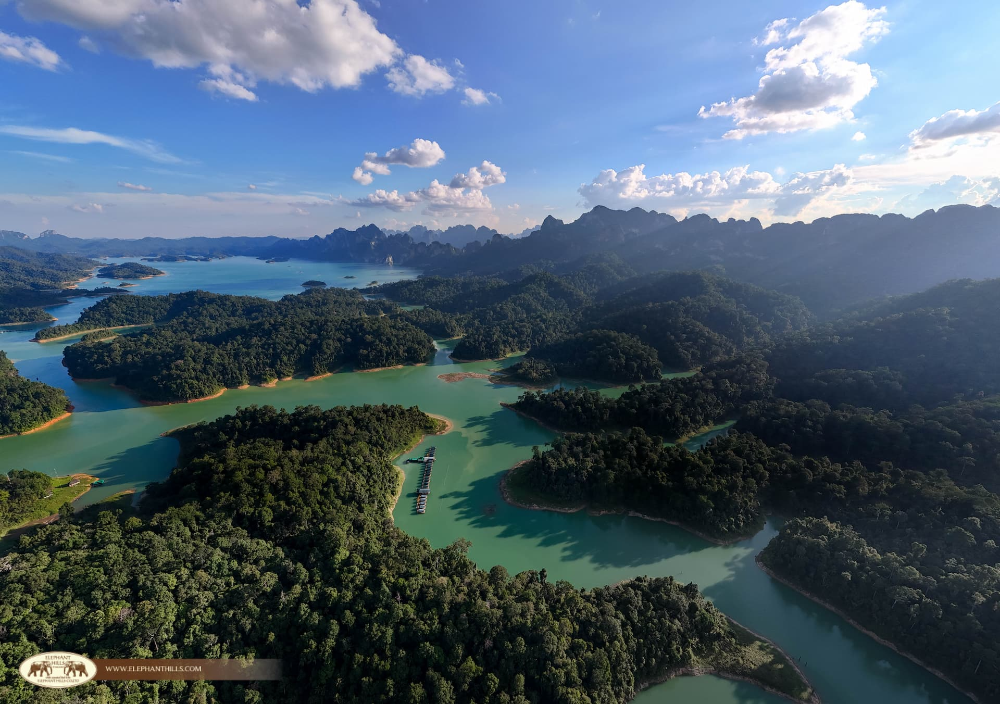
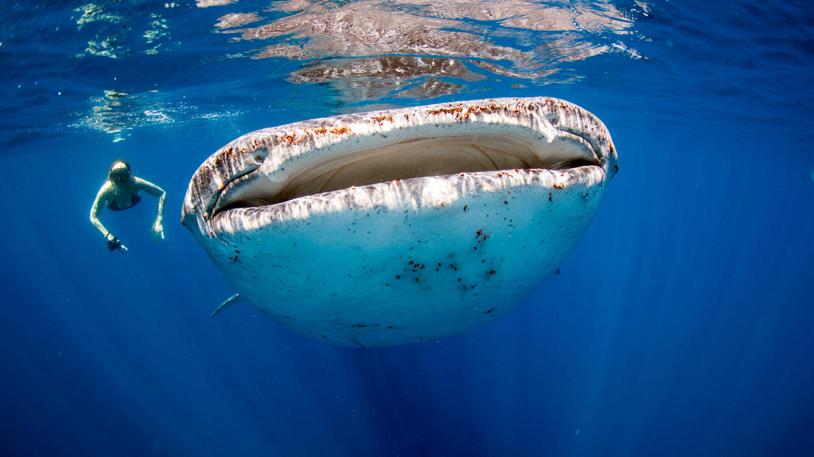
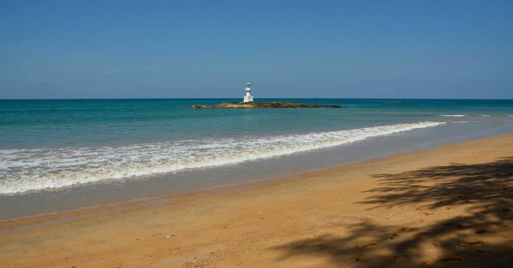
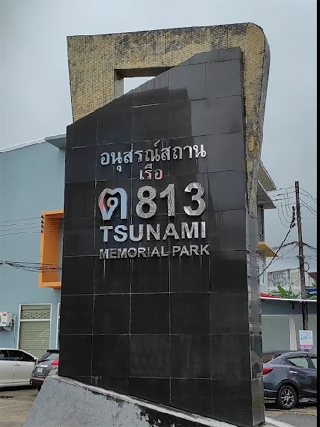
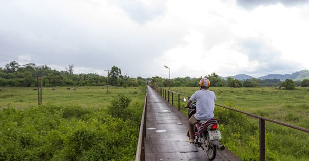

The limestone pinnacle made famous by The Man with the Golden Gun. Walking on it is free. Every speedboat in southern Thailand converges here between 10:00–14:00 — the shot you want is before 08:30 (empty rock, soft morning light) or after 15:30 (long shadows, thinning crowds). ฿300 national park entry for Ao Phang Nga is bundled into most tours.
⌗ maratnomad.com · visitor dispatch Nov 2025
Collapsed-cave interior lagoons ringed by 100 m limestone walls — the bay's real showpiece. Motor boats cannot fit. Inflatable kayak entry only, through passages that flood at high tide. Koh Panak hides a network: the Ice Cream Cave (stalactite ceiling that looks mid-drip), Diamond Cave, then open-sky emerald water. Access exists only in a ~90-minute tidal window each day.
⌗ andamanseakayak.com · field notesA Muslim fishing community ~200 years old, built entirely on stilts over the bay. Three floating football pitches built after 1986. Pork, alcohol and smoking are banned; dress modestly. Most full-day bay tours stop here for lunch — arrive independently from Phang Nga pier (~30 min, ~฿200) for a less hurried morning visit before the coach groups arrive.
⌗ thailandmagazine.com · Koh Panyee guide
John Gray's 10-hour flagship — the definitive Phang Nga experience. Afternoon paddle through the hongs, sunset viewed from the escort vessel at James Bond Island, then re-entry into the lagoon after dark to float krathong lanterns in bioluminescent water. The plankton glow is real. Running since 1989; consistently top-rated across thousands of Tripadvisor reviews.
THE SINGLE BEST PHANG NGA SPLURGE. Schedule on Friday or Sunday — not the Aulis dinner day. Hotel pickup 10:20–11:15; returns ~21:30. Full 10-hour commitment.
⌗ johngray-seacanoe.com · official tour page
165 km² reservoir created in 1982 when Ratchaprapha Dam flooded a limestone valley. The dam left 900 m karst spires rising straight from the water — the "Guilin of Thailand." Day trips give you the scenery but miss the window: gibbons, hornbills and langurs are crepuscular. An overnight raft-house stay (from $80/night, all-inclusive) gets you the dawn boat safari.
~1 h by minivan from Khao Lak to Ratchaprapha Pier; pick-up 08:00. Park entry ฿300. Dry season Feb–May gives the best wildlife odds — nearly 400 bird species in the park.
⌗ passportandstamps.com · raft house field notes 2026700 m of limestone cave reached via a 2.5 km jungle trek (2–3 h). Waist-deep wading sections. Closed in heavy rain — eight people died in a 2007 flash flood. The most adventurous of Khao Sok's three caves (Coral Cave and Pra Khie Phet are easy 30-min visits). Bundled into most overnight raft-house packages. Do not attempt in questionable weather.
⌗ cheowlanlaketravel.com · cave notes
Kayak the Sok River near park HQ — monkeys, otters and snakes from the water. Dry season (Feb–May) lowers water levels and concentrates wildlife at the banks. Bonus January–March window: the Rafflesia kerrii trek — a 4 h, 5–10 km hunt for the world's largest parasitic flower (฿1,200 pp). Each bloom lasts only days; book on arrival, not in advance. Elephant sanctuary visits: Elephant Hills (no riding, 2025 Responsible Animal Welfare Award winner) or Khao Lak Elephant Sanctuary (stopped guest feeding 2025).
⌗ elephanthills.com · wildlife guide 2025
Horseshoe-shaped pinnacle 40 km offshore in the Surin group — Thailand's #1 whale-shark dive site. Also: Thailand's manta-ray hot spot at Koh Bon and one of the region's top pinnacle dives at Koh Tachai. Peak Feb–Apr for visibility (25 m+) and whale-shark probability. January–April is the confirmed season window.
LIVEABOARD ONLY. Day trips from Thap Lamu pier reach only the inner Similan sites. Richelieu Rock, Koh Bon and Koh Tachai require a 4-day/4-night liveaboard (mid-Oct to early May). Allocate this as a separate trip segment, not same-day with Aulis.
⌗ sunrise-divers.com · Richelieu Rock dive notesWidely cited as Thailand's healthiest coral reefs — beginner-snorkel accessible from the beach. Day trip from Thap Lamu pier (1.5–2 h speedboat). Most Surin tours include the Moken sea-gypsy village on Ko Surin Tai, a community consolidated into Ao Bon after the 2004 tsunami. The Lobong ceremony (a sea-spirit rite, twice-yearly) is occasionally witnessed by visitors during these trips.
⌗ thecaptainandthecook.com · Surin field guide
Six distinct beaches running north from Khao Lak. Nang Thong (~3 km, calm swimming, full services) anchors the strip. Coconut Beach is national-park land: no sunbeds, no engines, no development — the quiet end. Pakarang has surf and coral patches but no swimming. Bang Niang Night Market (Mon/Wed/Thu/Sat 16:00–22:00) is the evening destination. This stretch is your operational base for all island departures.
⌗ similandivecenter.com · beach guide
Thai Police Boat 813, swept 2 km inland by the 2004 Indian Ocean tsunami while protecting Crown Prince Bhumi Jensen (who survived). The boat still sits exactly where the wave left it, now enclosed in a free memorial park. Open 08:30–18:00 daily. The Bang Niang Night Market runs directly opposite on market evenings — pair both in a half-day.
⌗ khaolakcenter.com · memorial notes
Originally the spice port of Takola, later a tin-dredging hub that drew Chinese, Dutch, Portuguese and British traders. When tin collapsed in the early 1900s the foreigners left; the Chinese community stayed, producing the Sino-Portuguese shophouse streetscape still intact today. The Sunday Walking Street on Sri Takua Pa Road (15:00–20:00) fills with grilled seafood, sweet roti and southern snacks. ~45 min north of Khao Lak.
⌗ windowonphuket.com · Takua Pa historyA 15 m reclining golden Buddha enshrined inside a natural limestone cave, ~10 km south of Phang Nga town. Arrive before 09:30 to beat the bay-tour coaches that stop here en route. Resident macaques will take sunglasses, water bottles and anything loose from your hands — secure valuables before entry. ฿20 admission; open 08:00–17:00.
Two more culture stops nearby: Wat Tham Tapan (enter through a dragon's mouth into Buddhist hell dioramas, free, 08:30–18:00) and Sa Nang Manora Forest Park (2 km jungle trail, bat cave, swimmable waterfall pools, free).
⌗ thailandmagazine.com · Wat Suwan Khuha| Ao Phang Nga (the bay) | ฿300 / ฿150 |
| Khao Sok (Cheow Lan) | ฿300 / ฿150 |
| Mu Ko Similan | ฿500 / ฿250 |
| Mu Ko Surin | ฿500 / ฿250 |
| Wat Suwan Khuha | ฿20 |
| Tsunami Memorial | Free |